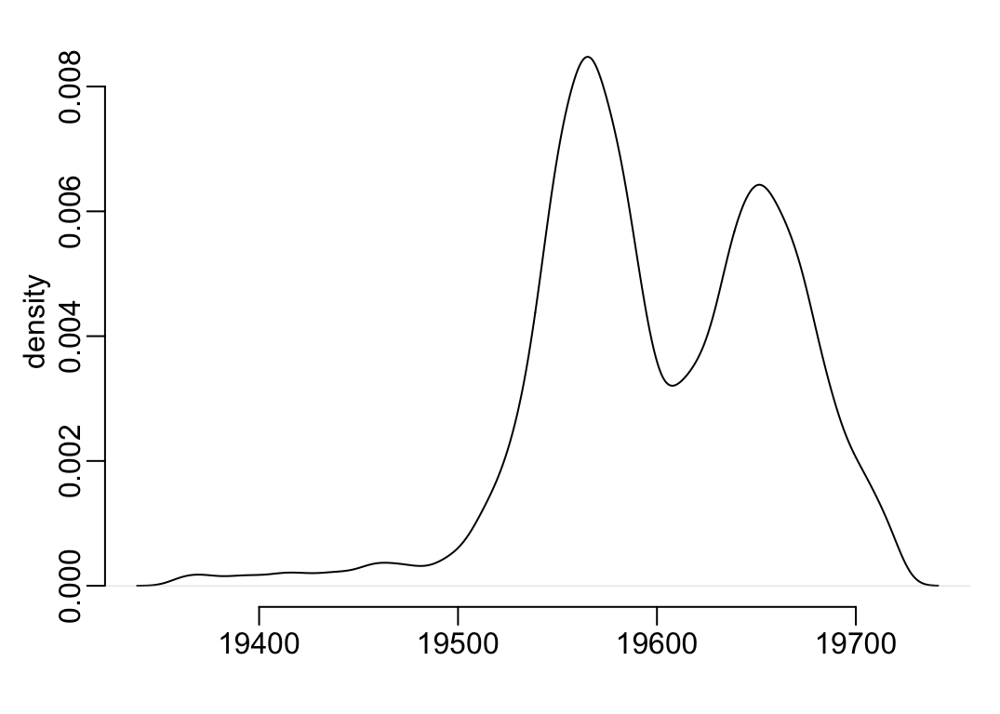
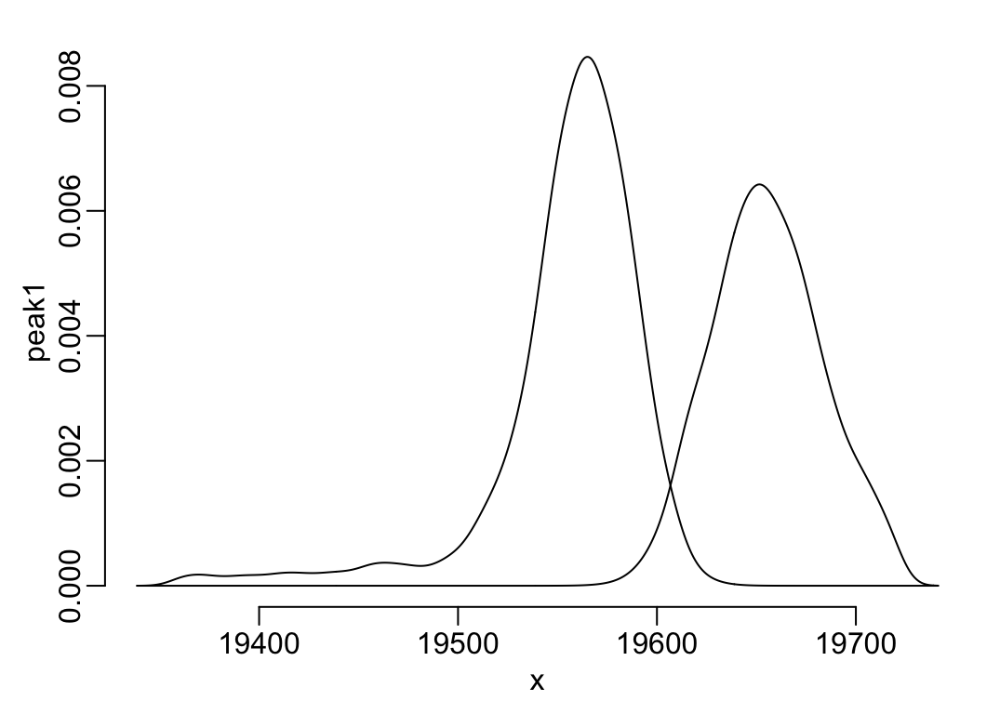

if (Sys.getenv("USER") == "MarcChoisy") {
path2data <- paste0("~/Library/CloudStorage/OneDrive-SharedLibraries-OxfordUniversi",
"tyClinicalResearchUnit/OUCRU Modelling - Documents/HFMD HCMC 2",
"023/data/cleaned/")
} else {
path2data <- paste0("D:/OUCRU-Onedrive/OneDrive - Oxford University Clinical Resear",
"ch Unit/Data/HFMD/cleaned/")
}Manuscript
1 Constants
Path to data:
Files names:
cases_file <- "hfmd_hcdc.rds"
sero_file <- "sero_EV-A71_1222-1223.rds"
viro_file <- "virology_cleaned.rds"2 Packages
Required packages:
required <- c("magrittr", "lubridate", "mclust", "dplyr")Installing those that are not installed yet:
to_install <- required[! required %in% installed.packages()[, "Package"]]
if (length(to_install)) install.packages(to_install)Loading the packages for interactive use:
invisible(sapply(required, library, character.only = TRUE))3 Functions
A tuning of readRDS():
readRDS2 <- function(x) readRDS(paste0(path2data, x))A tuning of the plot() function:
plot_dens <- function(...) plot(..., main = NA, xlab = NA, ylab = "density")4 Data
Import data:
df_sero <- readRDS2(sero_file)df_viro <- readRDS2(viro_file)df23 <- cases_file |>
readRDS2() |>
select(dob, admission_date, district, inout, severity, medi_cen) |>
filter(year(admission_date) == 2023) |>
filter_out(is.na(dob)) |>
unique() |>
mutate(across(severity, ~ case_when(is.na(.x) ~ "Undefined",
severity %in% c("3", "4") ~ "3 or 4",
.default = severity) |> as.factor()),
across(medi_cen, ~ tolower(stringi::stri_trans_general(.x, "Latin-ASCII"))),
across(medi_cen,
~ case_when(.x == "benh vien nhi dong 1" ~ "Children's hospital 1",
.x == "benh vien benh nhiet doi tphcm" ~
"Hospital of Tropical Diseases",
.x == "benh vien nhi dong 2" ~ "Children's hospital 2",
.x == "benh vien nhi dong thanh pho" ~
"City Children's hospital", .default = .x)),
age1 = interval(dob, admission_date) / years(1),
time = as.numeric(admission_date),
adm_week = as.Date(floor_date(admission_date, "week")),
age = round(age1))5 Finite mixture models
mclust_out <- df23 |>
filter(time > 19490) |>
select(time) |>
Mclust(2) |>
extract2("parameters")
pnorm1 <- function(q) {
pnorm(q, mclust_out$mean[1], sqrt(mclust_out$variance$sigmasq[1]), FALSE)
}
pnorm2 <- function(q) {
pnorm(q, mclust_out$mean[2], sqrt(mclust_out$variance$sigmasq[2]))
}
with(df23, plot_dens(density(time)))
df23 |>
with(density(time)) |>
extract(c("x", "y")) |>
as.data.frame() |>
mutate(peak1 = pnorm1(x),
peak2 = pnorm2(x),
total = peak1 + peak2,
peak1 = y * peak1 / total,
peak2 = y * peak2 / total) |>
with({
plot(x, peak1, type = "l")
lines(x, peak2)
})